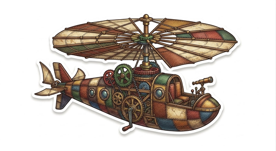

Avete mai osservato il mondo da un paio di occhiali da aviatore? Quando è stata l'ultima volta che vi siete interessati a cose bizzarre, come ai nomi scientifici delle nubi in cielo? O che avete studiato gli strani ingranaggi dei meccanismi di un carillon? Magari mai, ma forse vale la pena iniziare.
C'è un filone un po' nascosto dell'estetica contemporanea che costituisce una nicchia vivace della letteratura, dell'arte e anche della musica degli ultimi anni. Per iniziare a farsi un'idea si può pensare a Jules Verne come precursore di questo sottogenere narrativo, di questi topoi che costituiscono ciò che rientra nella corrente Steampunk. Si tratta di opere ambientate in un presente lontano dal nostro, dove gli inventori ingenui e bizzarri hanno vinto il gioco del progresso: macchine pesanti di ferraglia accatastata, ingranaggi rumorosi montati in meccanismi ridicoli che sbuffano e fischiano, dirigibili dall'aspetto di vascelli volanti, giubbe, corsetti, monocoli, e il motore a vapore. Un presente che si ispira al passato? Piuttosto un sogno di un giovane della tarda età vittoriana, che si interroga con stupore sulla forma del futuro.
Lo stupore è la componente chiave del successo di questa estetica: lo stupore per la conoscenza, per la scienza e per i suoi prodotti. È come se ogni oggetto sia animato da qualcosa di misterioso ed essenzialmente incomprensibile, che però per la prima volta si riesce a imbrigliare e indirizzare. Non è chiaramente casuale il riferimento al mondo degli inizi della prima rivoluzione industriale: il progresso fatto di bulloni, ingranaggi e vapore è presentato come un'idea raggiungibile da tutti, arcano come il funzionamento di un astrolabio (perché nell'essenza funziona?), ma privo della necessità di una specializzazione eccessiva per chiunque volesse portarlo avanti (come invece avviene nel presente di oggi). Insomma: la scienza come magia democratica.
Il successo e la bellezza di questa estetica fa leva sulla contrapposizione col presente reale: magia che appare normalizzata (quindi non riconosciuta come tale) e oligarchica, se non aristocratica (nel senso quasi-etimologico di "in mano ai migliori tecnici", ma sono scettico al riguardo).
I segreti di macchine enormi, elettroniche come aerei di linea, infrastrutture, calcolatori, lo stesso web, prodotti figli di un gran numero di menti e di un lungo intervallo di tempo, sembrano incomprensibili dal singolo individuo, e forse lo sono: chi può dire di avere in mente ogni singolo dettaglio del progetto dello Space Shuttle, o del Large Hadron Collider di Ginevra cavo per cavo, bullone per bullone? Lo Steampunk ha certamente in sé la nostalgia per una tecnologia più tangibile e visualizzabile (ruote dentate e meccanismi scoperti, ali meccaniche a forma di pipistrello, dirigibili), che esclude l'elettronica dal suo immaginario, ma è un sacrificio necessario: l'obiettivo è eliminare la cataratta di abitudine al progresso dai nostri occhi, usando forme vecchie, allegoriche e bizzarre per mostrarci il presente — attraverso gli occhiali da aviatore — e permetterci di vivere lo stupore anche per la tecnologia del nostro tempo.
Nell'attesa che le mongolfiere diventino un mezzo di trasporto efficiente, o che i vascelli tornino a varcare i cieli a gonfie vele, possiamo guardarci attorno e cercare i segni di un progresso che dia anche a noi l'entusiasmo della prima volta, e sfogo alla stravaganza. Dopotutto non fu così l'alba irregolamentata di internet? Chissà se i futuri pistoni, ingranaggi e pulegge non esistano già nel mondo moderno, magari nascosti, o magari ancora in divenire — penso alla nascita dell'Intelligenza Artificiale. Ma questa è un'altra storia!
